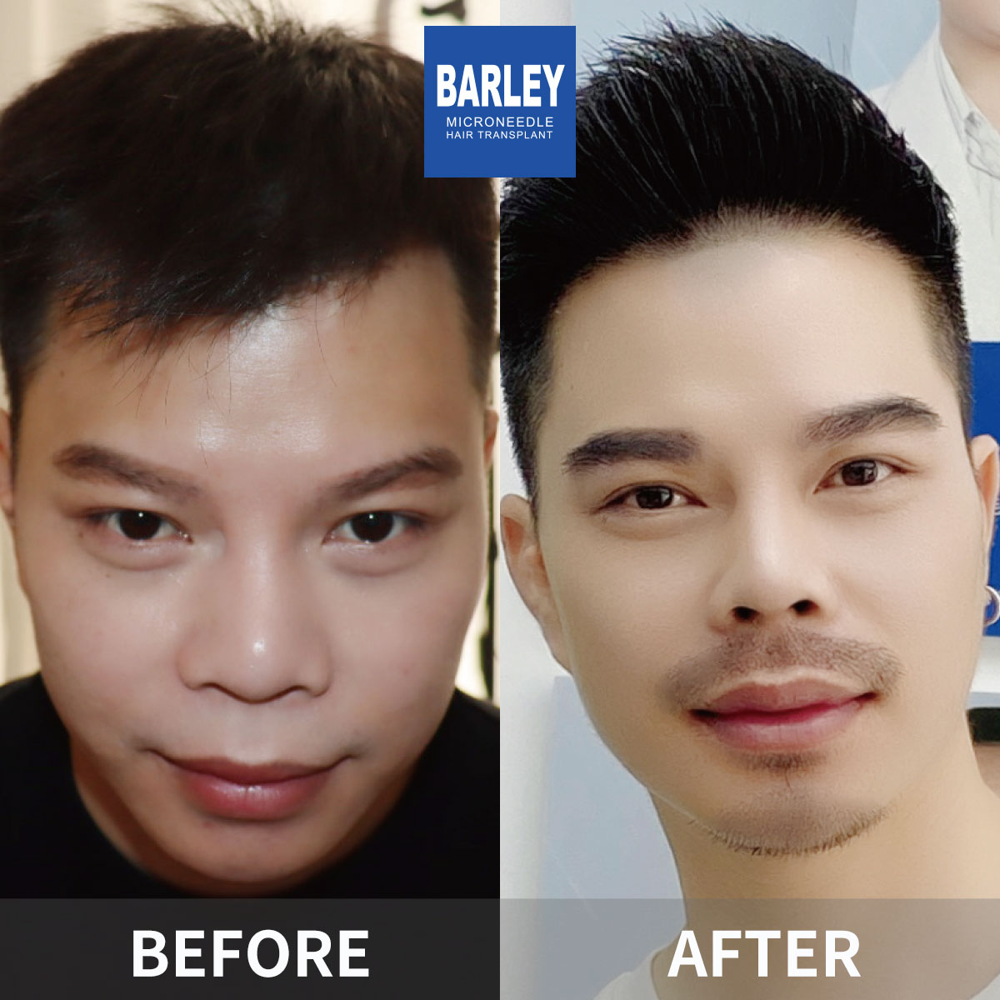

Achieve the full, natural beard you've always wanted with our advanced microneedle beard transplant technology. Custom design, natural growth pattern, long-lasting results.
Advanced microneedle technology for a natural, full beard
Personalized beard design based on your facial features and preferences for a look that suits you well.
Our precise implantation technique ensures your new beard grows in the natural direction matching your facial hair.
Minimally invasive procedure with quick healing time — most patients return to work in 2-3 days.
Transplanted hair follicles from your scalp grow naturally and permanently in your beard area.
Advanced microneedle technology for a natural, full beard
Whether you want a full beard, goatee, mustache, or specific style, our beard transplant procedure can help you achieve the look you desire. Using advanced microneedle technology, we transplant hair follicles from the scalp to create a natural-looking beard with ideal density and growth direction.
Our skilled surgeons specialize in facial hair transplantation and understand the unique aesthetics of beard design. Every procedure is customized to match your facial structure and personal style preferences.
Advanced microneedle technology for a natural, full beard
Barley's microneedle beard transplant technique uses an implanter pen to precisely place each hair follicle at the correct angle and depth. This advanced method allows for excellent control over beard density and growth direction.
Compared to traditional beard transplant methods, our microneedle technique creates smaller incisions, resulting in faster healing, less swelling, and more natural-looking results. The procedure is performed under local anesthesia and typically takes 3-6 hours depending on the number of grafts needed.
See the excellent beard transformations our patients have experienced



Real stories from real people who transformed their look with Barley
"I always had patchy beard growth and was self-conscious about it. After researching many clinics, I chose Barley for their microneedle technique. The results exceeded my expectations — my beard looks completely natural and full. The doctors were professional and the whole experience was smooth."
"The beard transplant at Barley was a game-changer for me. I went from having almost no facial hair to a full, thick beard in less than a year. The staff was incredibly supportive throughout the entire process, from consultation to follow-up appointments. Highly recommend!"
"I was nervous about getting a beard transplant, but the team at Barley put me at ease immediately. The procedure was virtually painless, and the results are excellent. My beard grows naturally and I can style it however I want. Worth every penny!"
"After years of trying different beard growth products with no success, I decided to get a transplant. Barley's microneedle technique gave me excellent results. The growth direction is ideal and it looks completely natural. My friends can't even tell I had a procedure done!"
"Traveling from the UK to China for my beard transplant was a great decision. The level of expertise at Barley is excellent. They designed the ideal beard shape for my face and the results after 8 months are excellent. I couldn't be happier!"
"I had a scar on my jawline that prevented beard growth in that area. Barley's team did an excellent job covering the scar with transplanted hair while also enhancing my overall beard density. The scar is completely hidden now and my beard looks excellent."
Everything you need to know about beard transplant at Barley
Beard transplant costs at Barley typically range from $2,500 to $8,000 USD, depending on the density and area to be covered. A full beard transplant usually requires 1,500-3,000 grafts. We provide free consultations to give you an accurate quote based on your specific needs.
Recovery is relatively quick. Most patients return to work within 3-5 days. Initial healing takes 7-10 days, with transplanted hair shedding after 2-3 weeks. New beard growth begins at 3-4 months, with full results visible at 9-12 months.
Yes, beard transplant results are long-lasting. The hair follicles are taken from the back of your head, which is resistant to DHT. Once transplanted to the beard area, these follicles will grow naturally for life, just like your natural beard hair.
Absolutely! During your consultation, our surgeons will work with you to design a beard shape that complements your facial features. We can create anything from a subtle goatee to a full beard, with precise control over density, shape, and hairline.
Yes, our microneedle technology ensures natural-looking results. We carefully control the angle, direction, and density of each implanted follicle to match your natural beard growth pattern. The results are indistinguishable from natural beard hair.
Beard hair growth follows a natural timeline: shedding at 2-3 weeks, new growth starts at 3-4 months, significant improvement at 6 months, and full results at 9-12 months. The beard continues to thicken and mature over time.
Schedule your free consultation today and take the first step towards a fuller, more confident you
Everyone's hair loss journey and solution are unique due to a variety of factors. Our hair restoration experts will assist you in determining the root cause and the great solution for your hair restoration plan. If you have any questions, please ask; we are happy to assist.
15810155700
+86 13730143529
hairtransplant@qq.com